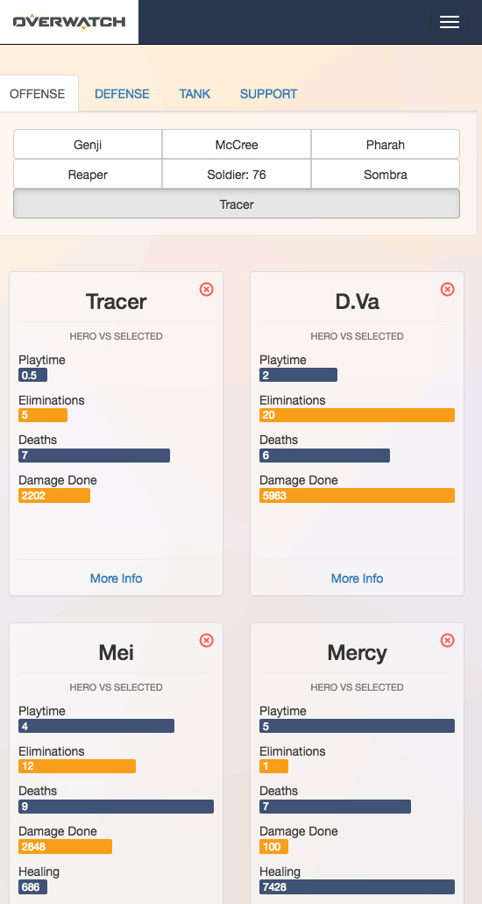
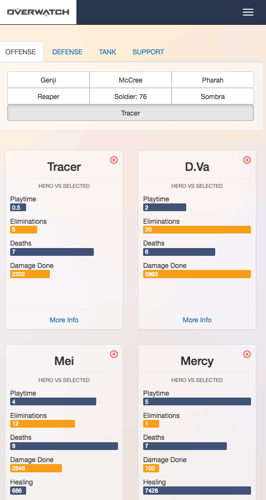

Overwatch Stats
Front-end static site that uses Handlebars for templating. Consumes two different APIs and includes form validation.
Bootstrap HandleBars JavaScript jQuery Overwatch API OW API Gulp
The site pulls users' Overwatch statistics from one API, and hero information from another. The homepage allows users to toggle on display of heroes, and compare statistics with animated stat bar visualizations.